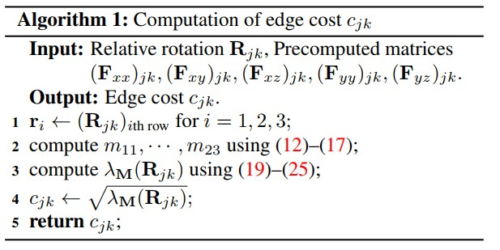
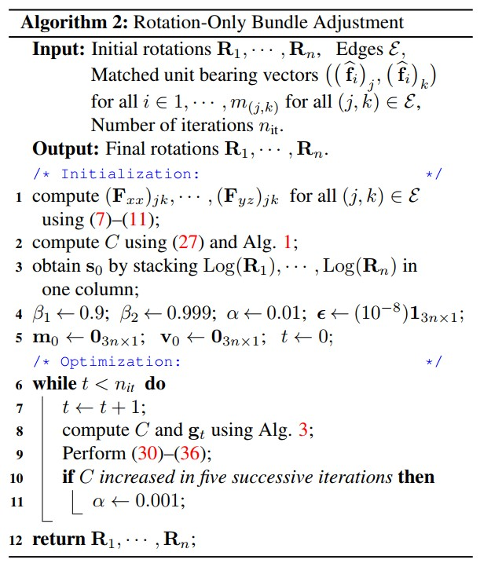
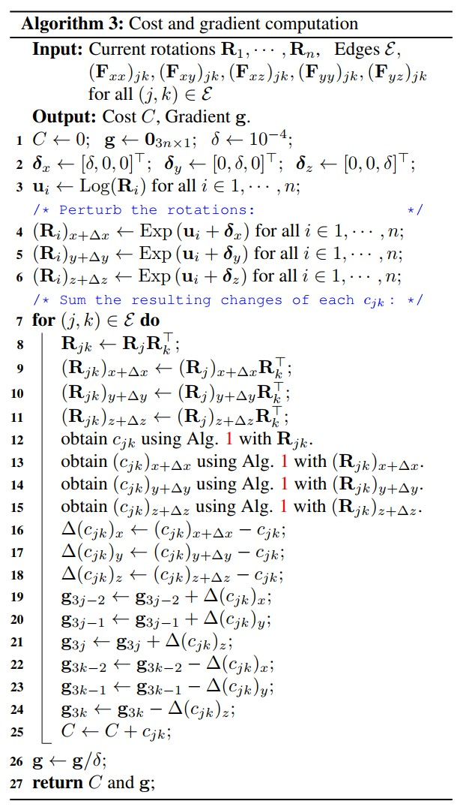

18. Rotation-Only Bundle Adjustment
👉 原文链接
🔥 代码已开源
注解
Global SfM pipeine：
（1） Feature extraction and matching across all images（SIFT.）
（2） Relative pose estimation between image pairs（5-pt algorithm in RANSAC）
（3） Global rotation estimation by multiple rotation averaging.
（4） Global translation estimation.
（5） Multiview triangulation.
（6） Bundle adjustment.
重要
（4），（5），（6） are influenced by the rotation accuracy of step（3）
To improve the accuracy，propose step（3.5）
\(\longrightarrow\) （3.5) Rotation-Only Bundle Adjustment（ROBA）
对于BA，需要对平移和结构进行良好的初始估计，否则迭代非线性优化将不会收敛到一个good solution.
本文提出了一种新的方法来估计摄像机的全局旋转，而与它们的位置和场景结构无关。当两个校准的摄像机观察到五个或更多相同的点时，它们的相对旋转可以独立于平移而恢复。
本文将这一思想扩展到多个视图，从而将旋转估计与平移和结构估计解耦。
本文提出的方法对不准确的平移和结构完全不敏感，同时提高了旋转平均的准确性。
- 优点
无需知道平移和结构即可估计旋转。
旋转不受平移和结构的不准确估计的影响
纯旋转和非纯旋转都以统一的方式处理，因为不需要三角测量和丢弃低视差点（low-parallax points）。
可在旋转平均后使用，以提高旋转估计的准确性。

注解
本文的工作基于《Direct optimization of frame-to-frame rotation》
Two-View Rotation-Only Optimization（Kneip & Lynen 2013）

其中三个点在两个校准视图中是共同可见的，每对点形成一个对极平面，上图显示了两视图的三个对极平面。
如果所有观测值都是准确的，则对极平面法向量 \(n_1, n_2, n_3\) 将会是 共面 的，因为它们都垂直于平移向量 \(t\) 。
但由于噪声的存在，它们不会共面，因此需要寻找一个旋转 \(R\) 使法线尽可能共面，即：
其中 \(\lambda_M\) 是矩阵 \(M\) 的最小特征值：
使用这个公式可以独立优化两个视图之间的旋转，但是该方法仅限于两视图。
本文的工作将其扩展成多视图（最小化以下的cost function）：
其中 \(\epsilon\) 是所有现有的有超过10个共同观察点的相机对。
然后使用 Adam optimizer（King & Ba,2015）求解。
18.1. Notation
对向量使用粗体小写字母，对矩阵使用粗体大写字母，对标量使用浅色字母。
哈达玛积： \(A ◦ B\)
除法： \(A \oslash B\)
平方根： \(A^{◦ \frac{1}{2}}\)
对于三维向量 \(v\) ，定义 \(v^∧\) 为对应的3 × 3反对称矩阵，并用 \(()^∨\) 表示逆算子，如 \((v^{∧})^{∨} = v\) ，
\(v\) 的欧氏范数用 \(||v||\) 表示，其单位向量用 \(\hat{v} = v / ||v||\) 表示，
一个旋转矩阵 \(R ∈ SO(3)\) 可以用对应的旋转向量 \(u = \theta \hat{u}\) 表示，其中 \(\theta\) 和 \(\hat{u}\) 分别表示旋转的角度和单位轴。 用Exp()和Log( ) 表示它们之间的映射:

\((x_i)_w = [(x_i)_w, (y_i)_w, (z_i)_w]^T\) 为世界参考系 \(w\) 中索引为 \(i\) 的点的三维位置。
\(c_j\) 是索引为 \(j\) 的透视照相机。
在 \(c_j\) 的参照系中， \(x_i\) 的位置由 \((x_i)_j = [(x_i)_j，(y_i)_j，(z_i)_j]^T = R_j(x_i)_w + t_j\) 表示，其中 \(R_j\) 和 \(t_j\) 是将 \(c_j\) 的局部参照系与世界联系起来的旋转和平移。
\(x_i\) 在 \(c_j\) 的图像平面中的投影具有像素坐标 \([(u_i)_j, (v_i)_j]^T = \left[\begin{matrix}1 & 0 & 0\\0 & 1 & 0\end{matrix}\right]K_j(f_i)_j\) 其中 \(K_j\) 是相机的内参标定矩阵， \((f_i)_j = [(x_i)_j/(z_i)_j, (y_i)_j/(z_i)_j,1]^T\) 是 \((x_i)_j\) 的归一化图像坐标。
\(R_{jk}\) 和 \(t_{jk}\) 为摄像机j和k之间的旋转和平移。
\(c_j\) 和 \(c_k\) 参考系中的点 \(x_i\) 由 \((x_i)_j = R_{jk}(x_i)_k + t_jk\) 相关联。
这意味着 \(R_{jk} = R_jR_k^T\) ，以及 \(t_{jk} = -R_jR_k^Tt_k + t_j\)
18.2. Two-view Rotation-Only Method
考虑已知内参的两个视图， \(c_j\) 和 \(c_k\) ，观察 \(m ≥ 5\) 个公共点，索引 \(i ∈ {1, 2, . . . , m}\) 。
与每个点 \(i\) 相关的归一化对极误差定义为：
注解
其中 \((\hat{f}_i)_j\) 和 \((\hat{f}_i)_k\) 分别是对应于 \(c_j\) 和 \(c_k\) 中第n 个点的单位方位向量。
注解
方位向量（bearing vector）：
方位向量为一个长度为3的单位向量，由相机（camera）指向三维点（landmark）。 它具有2个自由度，分别是摄像机参考系中的方位角和仰角。 由于它只有两个自由度，因此我们经常将其称为2D信息。 通常以摄像机参考系表示。

所有这些误差的平方和由下式给出：
其中：
在Two-View Rotation-Only Optimization一文中， \(3\times 3\) 的矩阵 \(M_{jk}\) 也可以这样计算：
将 \((\hat{f}_i)_j\) 表示为 \([(f_{xi})_j, (f_{yi})_j, (f_{zi})_j]^T\) ，定义为：

设 \(r_1,r_2,r_3\) 为 \(R_{jk}\) 的每一行， \(m_{ab}\) 为 \(M_{jk}\) 第 \(a\) 行第 \(b\) 列的元素。
因此：（为简单，省略了jk下标）
{kind=link}
以及 \(m_{21} = m_{12} ， m_{31} = m_{13} ， m_{32} = m_{23}\) 。
这是比第一个式子（ \(M_{jk} = \sum\limits_{i=1}^m ((\hat{f}_i)_j \times R_{jk}(\hat{f}_i)_k)((\hat{f}_i)_j \times R_{jk}(\hat{f}_i)_k)^T\) ）更有效的 \(M_{jk}\) 计算。
给定一组对应的 unit bearing vectors，可以通过最小化 \(\sum\limits_{i=1}^m (e_i)^2_{(j,k)} = \hat{t}_{jk}^T M_{jk} \hat{t}_{jk}\) 关于 \(R_{jk}\) 和 \(t_{jk}\) 来联合优化相对旋转和平移。
这个问题可以转化为仅旋转形式：
其中 \(\lambda_M(R_{jk})\) 是 \(M_{jk}\) 的最小特征值（它是 \(R_{jk}\) 的函数）。
该特征值可以以封闭形式获得：
{kind=link}
综上所述，最优解 \((R_{jk}^*, \hat{t}_{jk}^*)\) 的旋转部分使(5)最小化是通过求解(18)得到的
18.3. Rotation-Only Bundle Adjustment
18.3.1. Cost Function
上面是对两视图的简述，本文将该方法扩展到了多视图。
令 \(\epsilon\) 是所有边的集合，例如相机对 \((j,k)\) 观察到足够多的（>10）个共同点，然后，将优化问题公式化如下：
其中
其中 \(\lambda_M(R_{jk})\) 与 (18) 中用于双视图情况的代价函数相同，而 \(c_{jk} = \sqrt{\lambda_{M}(R_{jk})}\) 是边缘代价(edge cost)。
注解
作者凭经验发现这种平方根提高了收敛速度。

- algorithm 1

18.3.2. Optimization
为了迭代求解（26），使用 Adam，一种用于随机目标函数的一阶梯度优化算法。
注解
Adam 在深度学习中被广泛使用，作者发现它也适用于本文的几何优化问题。
给定 \(R_1,···,R_n\) 的初始估计值，令 \(s_0\) 为通过将 \(Log(R_1),···,Log(R_n)\) 堆叠在一列中形成的初始状态向量。
令 \(m_0 = 0_{3n \times 1}，v_0 = 0_{3n\times 1}, t=0, \epsilon = (10^{-8})1_{3n \times 1}\)
然后，使用 Adam，在优化的每次迭代中重复以下步骤：
对于超参数 \(\beta_1\) 和 \(\beta_2\) ，使用ADAM给出的默认值： \(\beta_1 = 0.9 , \beta_2 = 0.999\)
对于步长 \(\alpha\) ，在开始时使用 \(\alpha = 0.01\) ，一旦cost在五次连续迭代中增加，就永久切换到 \(\alpha = 0.001\) 。
注解
作者凭经验发现这种切换有时有助于收敛。
- algorithm 2

18.3.3. Gradient computation
以数值方式计算（29）中的梯度 \(g_t\) 。 可以通过稍微扰动 \(s_t\) 中的每个旋转参数并在遍历边缘集 \(\epsilon\) 时对所有边缘成本 \(c_{jk}\) 的结果变化求和来有效地完成。
注解
对每条边需要运行（算法1） 7 次（即 1 次来自未扰动状态，3 × 2 来自扰动 \(R_j\) 和 \(R_k\) ），如果有 \(n_\epsilon\) 条边，该方法将需要 \(7n_\epsilon\) 次边成本计算。
因此为了减少计算时间，进行以下近似：
其中 \((R_j)_{x+\Delta x}\) 和 \((R_k)_{x+\Delta x}\) 分别表示在旋转矢量的 \(x\) 分量中受到（相同幅度）扰动后的 \(R_j\) 和 \(R_k\) 。
也就是说，假设由 \((R_k)_{x+\Delta x}\) 引起的 \(\Delta c_{jk}\) 近似等于由 \((R_j)_{x+\Delta x}\) 引起的 \(\Delta c_{jk}\) 的负值。
对旋转向量的 y 和 z 分量中的扰动进行了类似的近似。
通过使用 \(R_j\) 的梯度近似 \(R_k\) 的梯度，将边缘成本计算的数量从 \(7n_\epsilon\) 减少到 \(4n_\epsilon\) 。
注解
根据经验，作者发现这在相对较小的精度损失的情况下显着提高了效率。
- algorithm 3

18.4. Results
作者使用了仿真数据集和真实数据集两种进行了测试：
仿真数据集

效果如下：

真实数据集